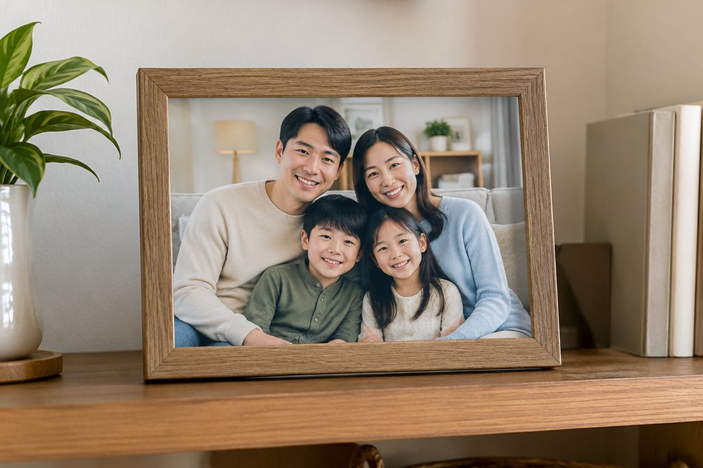

전체 단원 › 3~4학년 › 영어 › 가족 소개하기
우리 가족을 영어로 소개해 볼까?

친구에게 가족사진을 보여 주며 "우리 아빠야!"라고 말해 본 적 있나요? 영어로도 똑같이 소개할 수 있어요.
가족을 부르는 말
아빠는 father 또는 dad, 엄마는 mother 또는 mom이라고 해요.
남자 형제는 brother, 여자 형제는 sister예요. 영어에서는 형·오빠·남동생을 모두 brother라고 불러요. 할아버지는 grandfather, 할머니는 grandmother예요.
dad(아빠), mom(엄마), brother(남자 형제), sister(여자 형제)
This is my ~ 로 소개해요
가족을 소개할 때는 "This is my mom.(이분은 우리 엄마야.)"처럼 This is my 뒤에 가족 이름을 붙여요.
my는 '나의'라는 뜻이에요. 우리말로는 '우리 엄마'라고 하지만 영어에서는 my mom이라고 해요.
This is my brother. (이 아이는 우리 형이야.)
누구인지 묻고 답하기
사진 속 사람이 누구인지 궁금하면 "Who is he?(그는 누구야?)" 또는 "Who is she?(그녀는 누구야?)"라고 물어요.
남자는 he, 여자는 she를 써요. 대답은 "He is my dad."처럼 해요.
Who is she? - She is my grandmother.
핵심 낱말
- family
- 가족
- brother
- 남자 형제(형, 오빠, 남동생)
- sister
- 여자 형제(누나, 언니, 여동생)
- he / she
- 그 남자 / 그 여자
- my
- 나의, 우리
꼭 알아야 할 표현
| This is my mom. | 이분은 우리 엄마야. | 가족을 소개할 때 |
| This is my brother. | 이 아이는 우리 형(오빠, 남동생)이야. | |
| Who is he? | 그는 누구야? | 남자에 대해 물을 때 |
| Who is she? | 그녀는 누구야? | 여자에 대해 물을 때 |
| He is my dad. | 그는 우리 아빠야. | |
| She is my sister. | 그녀는 우리 언니(누나, 여동생)야. | |
| I love my family. | 나는 우리 가족을 사랑해. |
한 줄 정리
- 가족은 dad, mom, brother, sister, grandfather, grandmother로 불러요.
- 가족을 소개할 때는 This is my ~.라고 말해요.
- 누구인지 물을 때 남자는 Who is he?, 여자는 Who is she?를 써요.
학교 교육과정 연결
- [4영02-05] 자신, 주변 사람이나 사물의 소개나 묘사를 쉽고 간단한 문장으로 말하거나 보고 쓴다.
- [4영02-08] 자기 주변 주제에 관한 담화의 주요 정보를 묻거나 답한다.